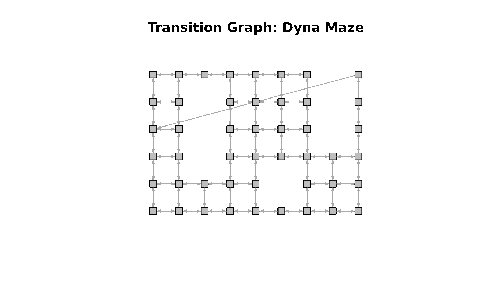
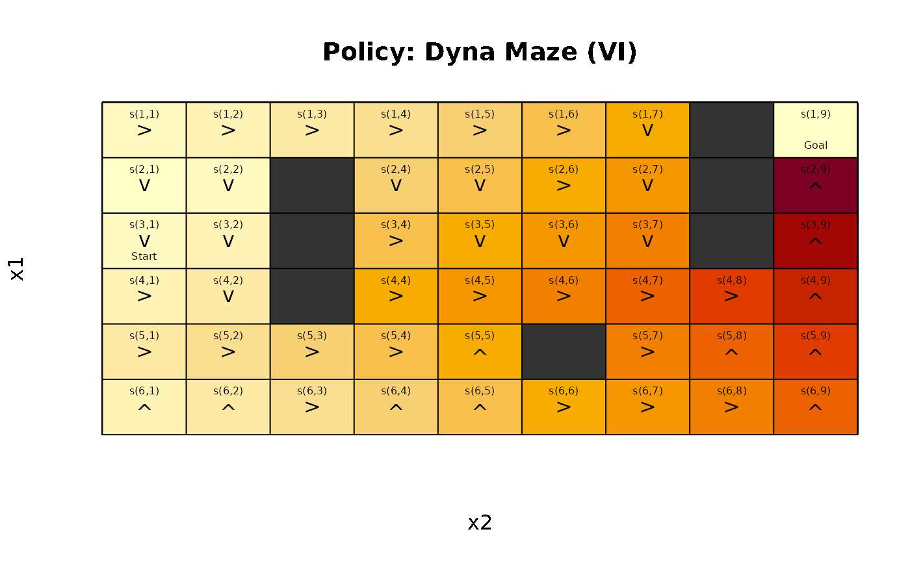
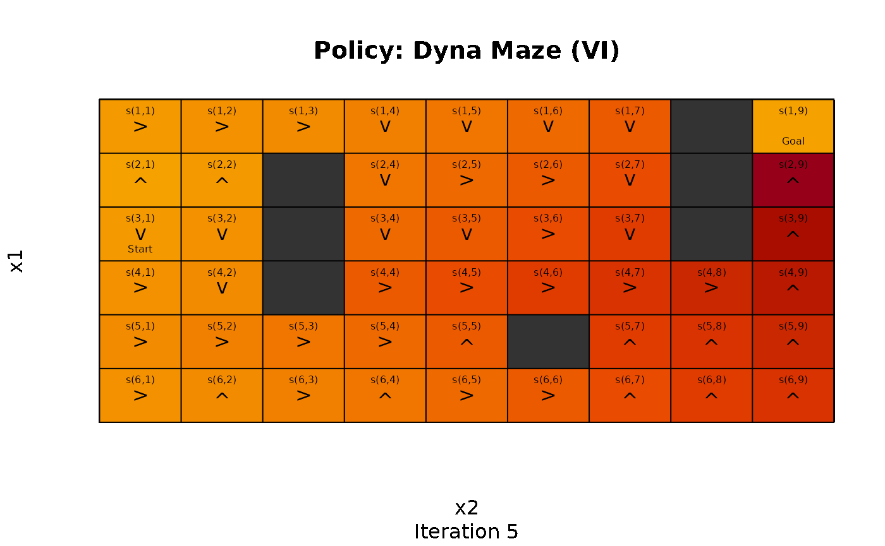
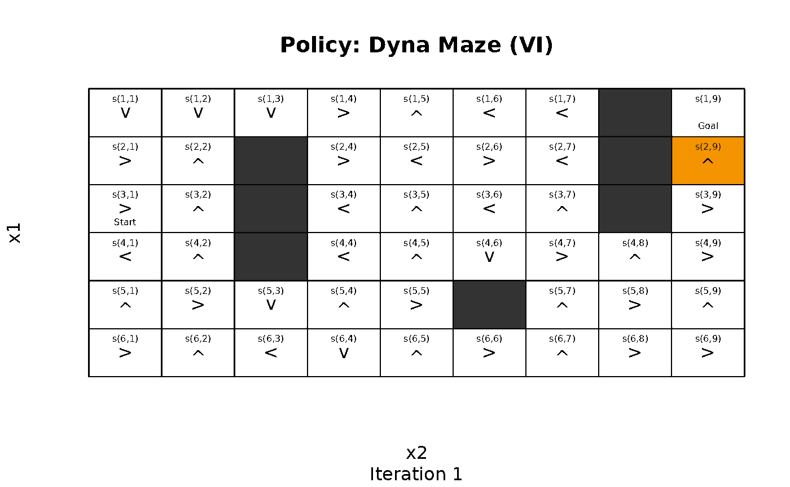
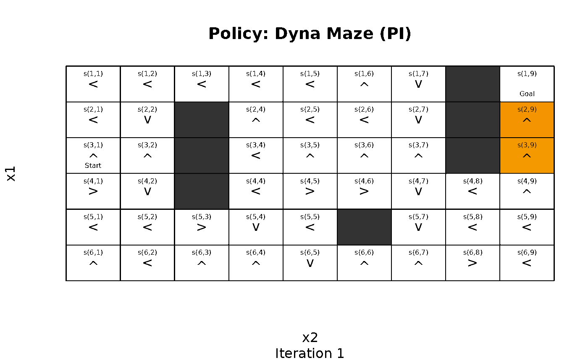
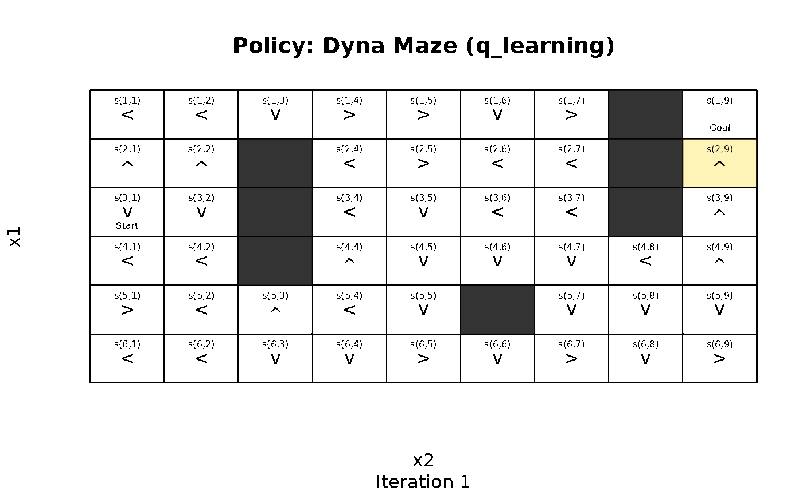

Introduction
Gridworlds represent an easy to explore how Markov Decision Problems
(MDPs) and various approaches to solve these problems work. The R
package markovDP (Hahsler 2024) provides a set of
helper functions starting with the prefix gw_ to make
defining and experimenting with gridworlds easy.
Defining a Gridworld
Many gridworlds represent mazes with start and goal states that the agent needs to solve. Mazes can be easily defined. Here we create the Dyna Maze from Chapter 8 in (Sutton and Barto 2018).
x <- gw_maze_MDP(
dim = c(6, 9),
start = "s(3,1)",
goal = "s(1,9)",
walls = c(
"s(2,3)", "s(3,3)", "s(4,3)",
"s(5,6)",
"s(1,8)", "s(2,8)", "s(3,8)"
),
goal_reward = 1,
step_cost = 0,
restart = TRUE,
discount = 0.95,
name = "Dyna Maze",
)
x
#> MDPModel, MDP - Dyna Maze
#> Discount factor: 0.95
#> Horizon: Inf epochs
#> Size: 4 actions / 47 states
#> Storage: transition prob as function / reward as data.frame. Total size: 44.7 Kb
#> Start: s(3,1)
#> Model list components: 'name', 'discount', 'horizon', 'states',
#> 'actions', 'start', 'transition_model', 'reward', 'info',
#> 'absorbing_states'Normalize the model for faster access.
x <- normalize_MDP(x)Gridworlds are implemented with state names
"s(<row>,<col>)", where row and
col are locations in the matrix representing the gridworld.
The actions are "up", "right",
"down", and "left". Conversion between state
labels and the position in the matrix (row and column index) can be done
with gw_s2rc() and gw_rc2s(),
respectively.
The transition graph can be visualized. Note, the transition from the state below the goal state back to the start state shows that the maze restarts the agent once it reaches the goal and collects the goal reward.

A more general way to create gridworlds is implemented in the
function gw_init() which initializes a new gridworld
creating a matrix of states with given dimensions. Blocked states and
absorbing state can be defined. The returned information can be used to
build a custom gridworld MDP.
Working with Gridworld MDPs
The gridworld can be accessed as a matrix.
gw_matrix(x)
#> [,1] [,2] [,3] [,4] [,5] [,6] [,7] [,8]
#> [1,] "s(1,1)" "s(1,2)" "s(1,3)" "s(1,4)" "s(1,5)" "s(1,6)" "s(1,7)" NA
#> [2,] "s(2,1)" "s(2,2)" NA "s(2,4)" "s(2,5)" "s(2,6)" "s(2,7)" NA
#> [3,] "s(3,1)" "s(3,2)" NA "s(3,4)" "s(3,5)" "s(3,6)" "s(3,7)" NA
#> [4,] "s(4,1)" "s(4,2)" NA "s(4,4)" "s(4,5)" "s(4,6)" "s(4,7)" "s(4,8)"
#> [5,] "s(5,1)" "s(5,2)" "s(5,3)" "s(5,4)" "s(5,5)" NA "s(5,7)" "s(5,8)"
#> [6,] "s(6,1)" "s(6,2)" "s(6,3)" "s(6,4)" "s(6,5)" "s(6,6)" "s(6,7)" "s(6,8)"
#> [,9]
#> [1,] "s(1,9)"
#> [2,] "s(2,9)"
#> [3,] "s(3,9)"
#> [4,] "s(4,9)"
#> [5,] "s(5,9)"
#> [6,] "s(6,9)"
gw_matrix(x, what = "labels")
#> [,1] [,2] [,3] [,4] [,5] [,6] [,7] [,8] [,9]
#> [1,] "" "" "" "" "" "" "" "X" "Goal"
#> [2,] "" "" "X" "" "" "" "" "X" ""
#> [3,] "Start" "" "X" "" "" "" "" "X" ""
#> [4,] "" "" "X" "" "" "" "" "" ""
#> [5,] "" "" "" "" "" "X" "" "" ""
#> [6,] "" "" "" "" "" "" "" "" ""
gw_matrix(x, what = "unreachable")
#> [,1] [,2] [,3] [,4] [,5] [,6] [,7] [,8] [,9]
#> [1,] FALSE FALSE FALSE FALSE FALSE FALSE FALSE TRUE FALSE
#> [2,] FALSE FALSE TRUE FALSE FALSE FALSE FALSE TRUE FALSE
#> [3,] FALSE FALSE TRUE FALSE FALSE FALSE FALSE TRUE FALSE
#> [4,] FALSE FALSE TRUE FALSE FALSE FALSE FALSE FALSE FALSE
#> [5,] FALSE FALSE FALSE FALSE FALSE TRUE FALSE FALSE FALSE
#> [6,] FALSE FALSE FALSE FALSE FALSE FALSE FALSE FALSE FALSENA represents states that were excluded from the state
space since they are not reachable (e.g., walls). Other options for
what are "values" (for state values) and
"action", but these are only available for solved problems
that contain a policy.
Solving a Gridworld
Gridworld MDPs are solved like any other MDP.
sol <- solve_MDP(x)
sol
#> MDPModel, MDP - Dyna Maze
#> Discount factor: 0.95
#> Horizon: Inf epochs
#> Size: 4 actions / 47 states
#> Storage: transition prob as matrix / reward as matrix. Total size: 202.6 Kb
#> Start: s(3,1)
#> Model list components: 'name', 'discount', 'horizon', 'states',
#> 'actions', 'start', 'transition_model', 'reward', 'info',
#> 'absorbing_states', 'solution'
#>
#> Solved:
#> Method: 'VI'
#> Solution converged: TRUE
#> Solution list components: 'method', 'policy', 'converged', 'delta',
#> 'iterations'Detailed information about the solution can be accessed.
sol$solution
#> $method
#> [1] "VI"
#>
#> $policy
#> $policy[[1]]
#> state V action
#> 1 s(1,1) 0.9564197 right
#> 2 s(2,1) 0.9085510 down
#> 3 s(3,1) 0.9564197 down
#> 4 s(4,1) 1.0067576 right
#> 5 s(5,1) 1.0597448 right
#> 6 s(6,1) 1.0067576 up
#> 7 s(1,2) 1.0067576 right
#> 8 s(2,2) 0.9564197 down
#> 9 s(3,2) 1.0067576 down
#> 10 s(4,2) 1.0597448 down
#> 11 s(5,2) 1.1155208 right
#> 12 s(6,2) 1.0597448 up
#> 13 s(1,3) 1.0597448 right
#> 14 s(5,3) 1.1742325 right
#> 15 s(6,3) 1.1155208 right
#> 16 s(1,4) 1.1155208 right
#> 17 s(2,4) 1.1742325 down
#> 18 s(3,4) 1.2360342 right
#> 19 s(4,4) 1.3010886 right
#> 20 s(5,4) 1.2360342 right
#> 21 s(6,4) 1.1742325 up
#> 22 s(1,5) 1.1742325 right
#> 23 s(2,5) 1.2360342 down
#> 24 s(3,5) 1.3010886 down
#> 25 s(4,5) 1.3695669 right
#> 26 s(5,5) 1.3010886 up
#> 27 s(6,5) 1.2360342 up
#> 28 s(1,6) 1.2360342 right
#> 29 s(2,6) 1.3010886 right
#> 30 s(3,6) 1.3695669 down
#> 31 s(4,6) 1.4416494 right
#> 32 s(6,6) 1.3010886 right
#> 33 s(1,7) 1.3010886 down
#> 34 s(2,7) 1.3695669 down
#> 35 s(3,7) 1.4416494 down
#> 36 s(4,7) 1.5175257 right
#> 37 s(5,7) 1.4416494 right
#> 38 s(6,7) 1.3695669 right
#> 39 s(4,8) 1.5973955 right
#> 40 s(5,8) 1.5175257 up
#> 41 s(6,8) 1.4416494 right
#> 42 s(1,9) 0.9085510 up
#> 43 s(2,9) 1.8631235 up
#> 44 s(3,9) 1.7699673 up
#> 45 s(4,9) 1.6814689 up
#> 46 s(5,9) 1.5973955 up
#> 47 s(6,9) 1.5175257 up
#>
#>
#> $converged
#> [1] TRUE
#>
#> $delta
#> [1] 5.019446e-05
#>
#> $iterations
#> [1] 194Now the policy and the state values are available as a matrix.
gw_matrix(sol, what = "values")
#> [,1] [,2] [,3] [,4] [,5] [,6] [,7] [,8]
#> [1,] 0.9564197 1.0067576 1.059745 1.115521 1.174232 1.236034 1.301089 NA
#> [2,] 0.9085510 0.9564197 NA 1.174232 1.236034 1.301089 1.369567 NA
#> [3,] 0.9564197 1.0067576 NA 1.236034 1.301089 1.369567 1.441649 NA
#> [4,] 1.0067576 1.0597448 NA 1.301089 1.369567 1.441649 1.517526 1.597395
#> [5,] 1.0597448 1.1155208 1.174232 1.236034 1.301089 NA 1.441649 1.517526
#> [6,] 1.0067576 1.0597448 1.115521 1.174232 1.236034 1.301089 1.369567 1.441649
#> [,9]
#> [1,] 0.908551
#> [2,] 1.863123
#> [3,] 1.769967
#> [4,] 1.681469
#> [5,] 1.597395
#> [6,] 1.517526
gw_matrix(sol, what = "actions")
#> [,1] [,2] [,3] [,4] [,5] [,6] [,7] [,8] [,9]
#> [1,] "right" "right" "right" "right" "right" "right" "down" NA "up"
#> [2,] "down" "down" NA "down" "down" "right" "down" NA "up"
#> [3,] "down" "down" NA "right" "down" "down" "down" NA "up"
#> [4,] "right" "down" NA "right" "right" "right" "right" "right" "up"
#> [5,] "right" "right" "right" "right" "up" NA "right" "up" "up"
#> [6,] "up" "up" "right" "up" "up" "right" "right" "right" "up"A visual presentation with the state value represented by color (darker is larger), the policy represented by action arrows, and the labels added is also available.
gw_plot(sol)
We see that value iteration found a clear path from the start state towards the goal state following increasing state values.
Experimenting with Solvers
It is interesting to look how different solvers find a solution. We can visualize how the policy and state values change after each iteration. For example, we can stop the algorithm after a given number of iterations and visualize the progress.
sol <- solve_MDP(x, method = "DP:VI", iter_max = 5)
#> Warning: In func(model, method, horizon, discount, ..., continue = continue, verbose = verbose, progress = progress):
#> Unknown arguments: iter_max = 5
#> Warning: In solve_MDP_DP_VI(model, error, n, V = V, progress = progress, verbose = verbose, ...):
#> Unknown arguments: iter_max = 5
gw_plot(sol, zlim = c(0, 2), sub = "Iteration 5")
The solver creates a warning indicating that the solution has not converged after only 5 iterations. In the visualization, we see that value iteration has expanded values from the goal state up to 5 squares away.To see how the updates in the solver work, we can use
gw_animate() to draw a visualization after each iteration.
R markdown documents can use {r, fig.show='animate'} so
create an animation using the individual frames.
gw_animate(x, "DP:VI", n = 20, zlim = c(0, 2))
It is easy to see how value iteration propagates value from the goal to the start. In the following, we create animations for more solving methods.
gw_animate(x, "DP:PI", n = 15, zlim = c(0, 2))
gw_animate(x, "TD:q_learning", n = 15, zlim = c(0, 2), horizon = 1000)